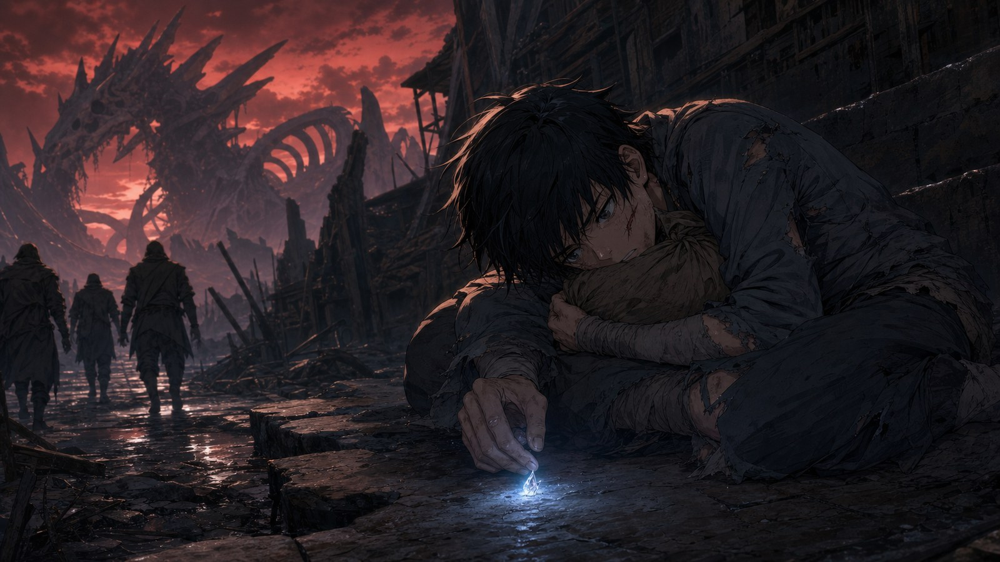
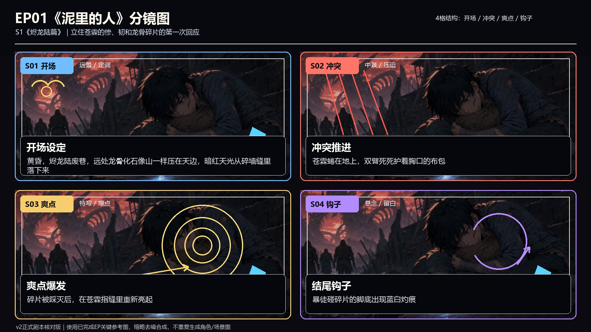
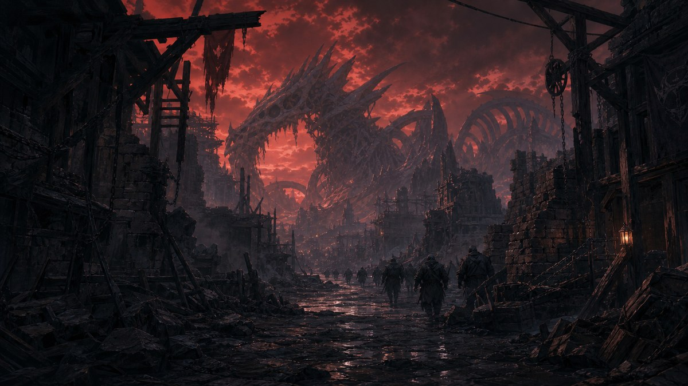
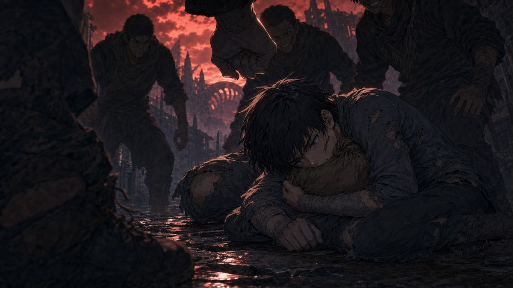
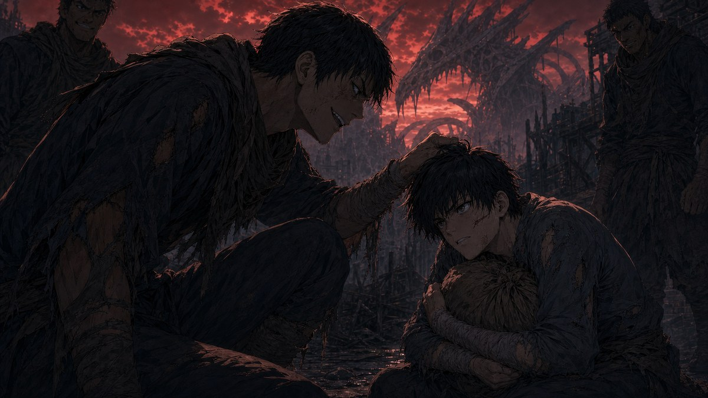
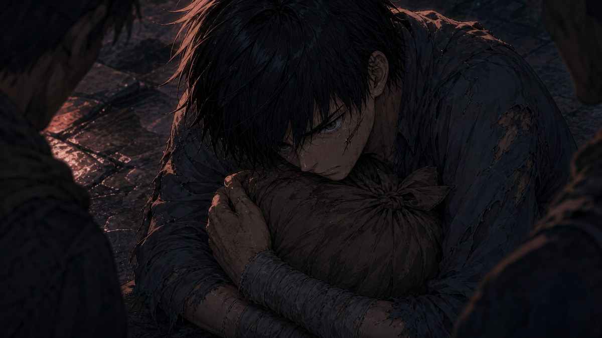
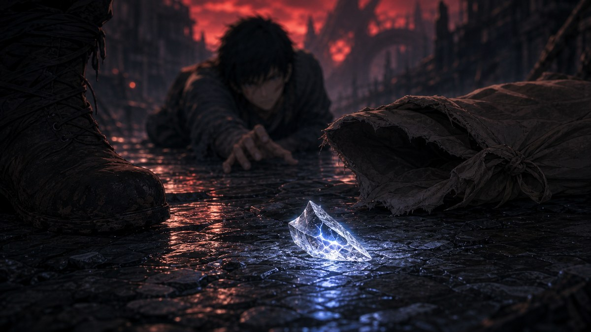

EP01《泥里的人》


EP01 已完成逐镜头分镜（5 张）





本集作用：立住苍霖的惨、韧和龙骨碎片的第一次回应。
爽点：碎片被踩灭后，在苍霖指缝里重新亮起。
结尾钩子：暴徒碰碎片的脚底出现蓝白灼痕。
黄昏，烬龙陆废巷。远处龙骨化石像山一样压在天边，暗红天光从碎墙缝里落下来。
苍霖蜷在地上，双臂死死护着胸口的布包。暴徒的拳头从画面上方砸下，他的头偏向一侧，血从嘴角流出来。
暴徒甲蹲下，抓住他的头发："还护？你爹当年偷龙骨，害死半条矿脉，你也想当龙骑士？"
苍霖没有回嘴，只把胸口护得更紧。
暴徒乙一脚踢开布包，拇指大的龙骨碎片滚到石面上。碎片里细细的血管纹亮了一下，蓝白光像心跳一样跳了两次。
所有人都安静了一瞬。
暴徒甲眼神变贪，抬脚踩下去。蓝光被靴底挤压，闪烁，熄灭。
苍霖的眼睛里，那点光也跟着灭了。
暴徒甲笑："看见没？连它都不选你。"
三人离开。巷子里只剩风声和苍霖的喘息。他爬了很久，手指一点点摸到碎片。指尖碰上的刹那，碎片在他指缝里极弱地亮了一下。
苍霖攥紧碎片，指节发白。
远处，刚才踩碎片的暴徒甲脚步一顿。他低头，发现靴底冒出一缕蓝白烟。